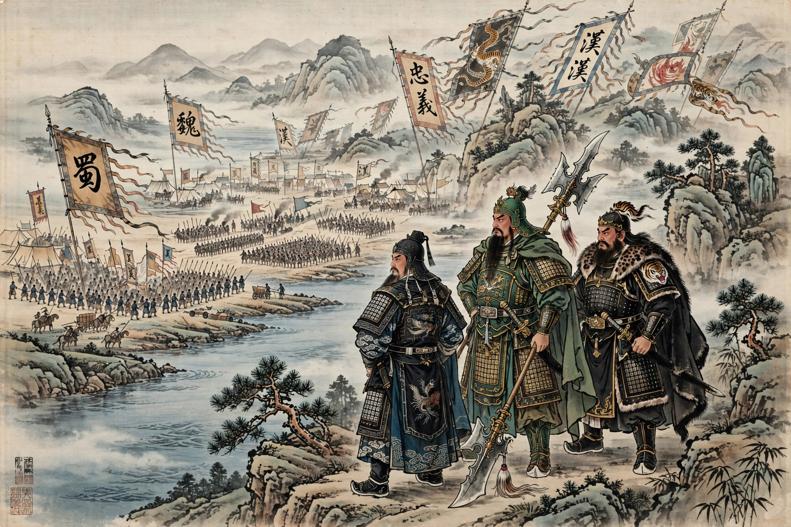

| Author | Luo Guanzhong (attributed) |
|---|---|
| Language | Written Chinese |
| Published | 14th century (Ming dynasty) |
| Genre | Historical novel |
Romance of the Three Kingdoms (traditional Chinese: 三國演義) is a 14th-century historical novel attributed to Luo Guanzhong. It is set in the turbulent years towards the end of the Han dynasty and the Three Kingdoms period (220–280 AD) and is one of the Four Great Classical Novels of Chinese literature.
The novel dramatises the fall of Han, the oath of Liu Bei, Guan Yu, and Zhang Fei in the Peach Garden, the strategist Zhuge Liang, the warlord Cao Cao, the Battle of Red Cliffs (208), and the rivalry of Wei, Shu, and Wu, blending history from Chen Shou's Records of the Three Kingdoms with folklore. Its opening line — "The empire, long divided, must unite; long united, must divide" — is famous.
The work shaped East Asian popular culture, inspiring operas, games (notably Koei's series and Dynasty Warriors), films, and idioms about strategy and loyalty.